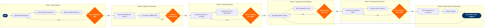

Customer Data & Personalization
Customer Experience & Loyalty › Customer Experience Operations · 17 L4 steps · 6 phases · 4 decision gates · Updated 2026-10-01 21:58
📊
Process Flow Diagram (BPMN)

📋
L4 Process Steps
| Step | Step Name | Role / Swim Lane | System | Input | Output | KPI | Dec? | Exc? |
|---|---|---|---|---|---|---|---|---|
Phase 1 1.1 |
Ingest booking & transaction data from PSS | Data Engineer | Amadeus Altéa PSS | Nightly batch feed of PNR, ticketing, and ancillary purchase records | Raw booking event stream loaded to data lake | Data pipeline SLA: 100% of prior-day records ingested by 04:00 local | N | N |
| 1.2 | Collect loyalty programme interaction events | Data Engineer | Salesforce Marketing Cloud | Email opens, loyalty portal logins, miles accrual and redemption events | Loyalty event stream appended to data lake | Event capture rate ≥99% of Salesforce Marketing Cloud triggers per day | N | N |
| 1.3 | Capture web & mobile behavioural data | Digital Analytics Analyst | Adobe Analytics | Clickstream, search, seat-map interaction, and app session events | Behavioural event stream with session IDs written to AWS S3 | Tag coverage ≥98% of key conversion pages; session data latency ≤2 hours | N | N |
| 1.4 | Validate data completeness across all sources | Data Quality Engineer | AWS S3 / Redshift | Ingested event counts vs expected record volumes per source | Completeness scorecard; pipeline held or released | Overall data completeness ≥95% before downstream processing proceeds | Y | Y |
Phase 2 2.1 |
Cleanse and deduplicate customer records | Data Steward | Adobe Experience Platform | Raw multi-source event streams from data lake | Standardised, deduplicated customer record set | Duplicate record rate ≤0.5% post-cleanse; address standardisation accuracy ≥97% | N | N |
| 2.2 | Verify PII consent and GDPR / CCPA compliance | Privacy & Compliance Analyst | OneTrust | Customer consent records, marketing opt-in flags, data retention schedules | Consent-cleared record set; non-consented records quarantined | 100% of records processed against current consent status before any marketing activation; consent sync latency ≤24 hours from collection event | Y | Y |
| 2.3 | Enforce data retention and right-to-erasure rules | Privacy & Compliance Analyst | OneTrust | Erasure requests from customer portal, regulatory notices | Deletion confirmation across all downstream systems within SLA | Right-to-erasure requests fulfilled within 30 days per GDPR Article 17; 100% completion rate | N | Y |
Phase 3 3.1 |
Resolve identity and stitch cross-channel profiles | Data Scientist | Adobe Experience Platform | Consent-cleared, cleansed records with email, loyalty ID, device ID, PNR | Unified customer profiles with deterministic and probabilistic identity links | Identity match rate ≥80% of known travellers; profile stitching latency ≤6 hours from data ingestion | Y | N |
| 3.2 | Compute customer lifetime value and tier segments | CRM Analytics Manager | AWS Redshift | Unified profiles enriched with 24-month transaction history | CLV score, predicted annual revenue, and tier classification per customer | CLV model R² ≥0.72; tier classification refreshed weekly; top-decile CLV customers identified for proactive retention | N | N |
Phase 4 4.1 |
Run customer segmentation models | Data Scientist | AWS Redshift | Unified profiles with CLV, travel frequency, route preferences, ancillary purchase history | Customer segment labels (e.g., Leisure Infrequent, Corporate Road Warrior, Premium Aspirant) | Silhouette score ≥0.55 for k-means clusters; segment refresh cycle ≤7 days | Y | N |
| 4.2 | Build propensity scores for ancillary and upgrade offers | Data Scientist | Adobe Experience Platform | Segment labels, historical ancillary purchase events, seat-map interaction data | Per-customer propensity scores: upgrade likelihood, seat upsell, lounge day-pass, travel insurance | AUC ≥0.75 per propensity model; score refresh ≤48 hours before scheduled departure | N | N |
| 4.3 | Score churn risk for loyalty programme members | CRM Analytics Manager | Salesforce Marketing Cloud | Loyalty transaction recency, frequency, redemption gap, competitive route exposure | Churn risk tier (High / Medium / Low) and recommended retention intervention | Churn model recall ≥70% on held-out validation set; High-risk members flagged ≥60 days before predicted lapse | N | N |
Phase 5 5.1 |
Generate personalised pre-trip offer packages | CRM Campaign Manager | Salesforce Marketing Cloud | Propensity scores, segment labels, PNR departure date, fare class booked | Personalised offer payload (upgrade, seat, lounge, hotel partner) per customer | Offer relevance score ≥70% (measured by click-through proxy); ancillary attach rate uplift ≥8% vs control | N | Y |
| 5.2 | Activate offers across email, app push, and web | Digital Marketing Specialist | Braze | Personalised offer payloads, customer channel preference flags, optimal send-time scores | Delivered personalised messages across email, push notification, and website homepage | Email open rate ≥28%; push notification opt-in rate ≥45%; web personalisation CTR ≥4% | N | N |
| 5.3 | Serve real-time personalisation at airport touchpoints | Digital Product Manager | SITA Airport Management System (AMS) | Customer profile, check-in event trigger, real-time upgrade inventory from Amadeus Altéa PSS | Targeted upgrade or ancillary prompt displayed at kiosk or agent terminal | Kiosk upgrade conversion rate ≥5% for High-propensity customers; offer display latency ≤500ms from check-in event | N | Y |
Phase 6 6.1 |
Track offer redemption and revenue attribution | CRM Analytics Manager | AWS Redshift | Offer delivery logs from Braze and SITA AMS, ancillary revenue from Amadeus Altéa PSS | Offer conversion rate, incremental revenue per segment, cost-per-acquisition | Incremental ancillary revenue per personalised journey ≥€12 vs control; attribution model updated weekly | N | N |
| 6.2 | Analyse A/B test results and model performance | Data Scientist | Tableau | Conversion data, control vs treatment group outcomes, propensity model predictions vs actuals | Performance report; decision to retrain models or adjust segmentation thresholds | A/B test statistical significance ≥95% before rolling out winning variant; model performance reviewed bi-weekly | N | N |
📋